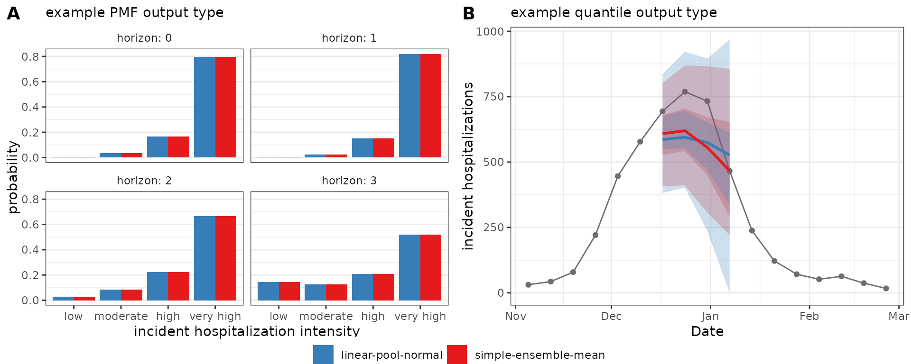

Introduction
The hubEnsembles package provides a flexible framework
for aggregating model outputs, such as forecasts or projections, that
are submitted to a hub by multiple models and combined into ensemble
model outputs. The package includes two main functions:
simple_ensemble and linear_pool. We illustrate
these functions in this vignette, and briefly compare them.
This vignette uses the following R packages:
Example data: a forecast hub
We will use an example hub provided by the hubverse to demonstrate
the functionality of the hubEnsembles package. This example
hub, stored in the hubExamples package, was generated with
modified forecasts from the FluSight forecasting challenge, a
collaborative modeling exercise run by the US Centers for Disease
Control and Prevention (CDC) since 2013 that solicits seasonal influenza
forecasts from outside modeling teams. The hubExamples
package includes model output data and target data (observed data
corresponding to each prediction target, sometimes known as “truth”
data) in the two forms defined by the hubverse: target time series data
and oracle output data. We load the forecast_outputs and
forecast_target_ts data objects containing the model output
and target time series data, respectively. Note that the toy model
outputs contain predictions for only a small subset rows of select
dates, locations, and output type IDs, far fewer than an actual modeling
hub would typically collect.
The model output data includes mean, median, quantile, and sample
forecasts of future incident influenza hospitalizations; as well as CDF
and PMF forecasts of hospitalization intensity (the latter made up of
categories determined by threshold of weekly hospital admissions per
100,000 population). Each forecast is made for five task ID variables,
including the location for which the forecast was made
(location), the date on which the forecast was made
(reference_date), the number of steps ahead
(horizon), the date of the forecast prediction (a
combination of the date the forecast was made and the forecast horizon,
target_end_date), and the forecast target
(target). Below we print a subset of this example model
output.
otid <- list(
mean = NA,
median = NA,
quantile = c(0, 0.25, 0.75),
sample = c("2101", "2102", "2103"),
pmf = c("low", "moderate", "high", "very high"),
cdf = c(1, 13, 15)
)
hubExamples::forecast_outputs |>
dplyr::filter(
output_type_id %in% unlist(otid),
reference_date == "2022-12-17",
location == "25",
horizon == 1
) |>
dplyr::arrange(model_id, dplyr::desc(target), output_type) |>
print(n = 16)
#> # A tibble: 48 × 9
#> model_id reference_date target horizon location target_end_date output_type output_type_id value
#> <chr> <date> <chr> <int> <chr> <date> <chr> <chr> <dbl>
#> 1 Flusight-baseline 2022-12-17 wk inc flu hosp 1 25 2022-12-24 mean NA 5.82e+2
#> 2 Flusight-baseline 2022-12-17 wk inc flu hosp 1 25 2022-12-24 median NA 5.82e+2
#> 3 Flusight-baseline 2022-12-17 wk inc flu hosp 1 25 2022-12-24 quantile 0.25 5.66e+2
#> 4 Flusight-baseline 2022-12-17 wk inc flu hosp 1 25 2022-12-24 quantile 0.75 5.98e+2
#> 5 Flusight-baseline 2022-12-17 wk inc flu hosp 1 25 2022-12-24 sample 2101 6.06e+2
#> 6 Flusight-baseline 2022-12-17 wk inc flu hosp 1 25 2022-12-24 sample 2102 5.76e+2
#> 7 Flusight-baseline 2022-12-17 wk inc flu hosp 1 25 2022-12-24 sample 2103 5.78e+2
#> 8 Flusight-baseline 2022-12-17 wk flu hosp rate category 1 25 2022-12-24 pmf low 9.70e-6
#> 9 Flusight-baseline 2022-12-17 wk flu hosp rate category 1 25 2022-12-24 pmf moderate 2.94e-3
#> 10 Flusight-baseline 2022-12-17 wk flu hosp rate category 1 25 2022-12-24 pmf high 7.35e-2
#> 11 Flusight-baseline 2022-12-17 wk flu hosp rate category 1 25 2022-12-24 pmf very high 9.24e-1
#> 12 Flusight-baseline 2022-12-17 wk flu hosp rate 1 25 2022-12-24 cdf 0.25 8.63e-9
#> 13 Flusight-baseline 2022-12-17 wk flu hosp rate 1 25 2022-12-24 cdf 0.75 4.83e-8
#> 14 Flusight-baseline 2022-12-17 wk flu hosp rate 1 25 2022-12-24 cdf 1 1.10e-7
#> 15 Flusight-baseline 2022-12-17 wk flu hosp rate 1 25 2022-12-24 cdf 13 1.00e+0
#> 16 Flusight-baseline 2022-12-17 wk flu hosp rate 1 25 2022-12-24 cdf 15 1.00e+0
#> # ℹ 32 more rowsThe corresponding target time series data provide observed incident
influenza hospitalizations (observation) in a given week
(date) and for a given location (location).
This format of target data is generally used as calibration data for
generating forecasts or in conjunction with forecasts for
visualizations. (The other form of target data, oracle output, is
suitable for evaluating the forecasts post hoc, which is not in scope
for this vignette). The forecast-specific task ID variables
reference_date and horizon are not relevant
for the use cases of target time series data and are thus omitted.
head(hubExamples::forecast_target_ts, 10)
#> # A tibble: 10 × 3
#> date location observation
#> <date> <chr> <dbl>
#> 1 2020-01-11 01 0
#> 2 2020-01-11 15 0
#> 3 2020-01-11 18 0
#> 4 2020-01-11 27 0
#> 5 2020-01-11 30 0
#> 6 2020-01-11 37 0
#> 7 2020-01-11 48 0
#> 8 2020-01-11 US 1
#> 9 2020-01-18 01 0
#> 10 2020-01-18 15 0Creating ensembles with simple_ensemble
The simple_ensemble() function directly computes an
ensemble from component model outputs by combining them via some
function within each unique combination of task ID variables, output
types, and output type IDs. This function can be used to summarize
predictions of output types mean, median, quantile, CDF, and PMF. The
mechanics of the ensemble calculations are the same for each of the
output types, though the resulting statistical ensembling method differs
for different output types.
By default, simple_ensemble() uses the mean for the
aggregation function and equal weights for all models, though the user
can create different types of weighted ensembles by specifying an
aggregation function and weights.
Using the default options for simple_ensemble(), we can
generate an equally weighted mean ensemble for each unique combination
of values for the task ID variables, the output_type and
the output_type_id. This means different ensemble methods
will be used for different output types: for the quantile
output type in our example data, the resulting ensemble is a quantile
average, while for the mean, CDF, and PMF output types the ensemble is a
linear pool. The simple_ensemble() function does not
support the sample output type, so we remove the sample predictions from
the forecast model outputs.
mean_ens <- hubExamples::forecast_outputs |>
dplyr::filter(output_type != "sample") |>
hubEnsembles::simple_ensemble(
model_id = "simple-ensemble-mean"
)The resulting model output has the same structure as the original
model output data, with columns for model ID, task ID variables, output
type, output type ID, and value. We also use
model_id = "simple-ensemble-mean" to change the name of
this ensemble in the resulting model output; if not specified, the
default will be “hub-ensemble”. A subset of the predictions is printed
below.
mean_ens |>
dplyr::filter(
output_type_id %in% unlist(otid),
reference_date == "2022-12-17",
location == "25",
horizon == 1
)
#> # A tibble: 13 × 9
#> model_id reference_date target horizon location target_end_date output_type output_type_id value
#> <chr> <date> <chr> <int> <chr> <date> <chr> <chr> <dbl>
#> 1 simple-ensemble-mean 2022-12-17 wk flu hosp rate 1 25 2022-12-24 cdf 0.25 0.000284
#> 2 simple-ensemble-mean 2022-12-17 wk flu hosp rate 1 25 2022-12-24 cdf 0.75 0.000556
#> 3 simple-ensemble-mean 2022-12-17 wk flu hosp rate 1 25 2022-12-24 cdf 1 0.000767
#> 4 simple-ensemble-mean 2022-12-17 wk flu hosp rate 1 25 2022-12-24 cdf 13 0.947
#> 5 simple-ensemble-mean 2022-12-17 wk flu hosp rate 1 25 2022-12-24 cdf 15 0.977
#> 6 simple-ensemble-mean 2022-12-17 wk flu hosp rate category 1 25 2022-12-24 pmf high 0.151
#> 7 simple-ensemble-mean 2022-12-17 wk flu hosp rate category 1 25 2022-12-24 pmf low 0.00437
#> 8 simple-ensemble-mean 2022-12-17 wk flu hosp rate category 1 25 2022-12-24 pmf moderate 0.0233
#> 9 simple-ensemble-mean 2022-12-17 wk flu hosp rate category 1 25 2022-12-24 pmf very high 0.821
#> 10 simple-ensemble-mean 2022-12-17 wk inc flu hosp 1 25 2022-12-24 mean NA 627.
#> 11 simple-ensemble-mean 2022-12-17 wk inc flu hosp 1 25 2022-12-24 median NA 620.
#> 12 simple-ensemble-mean 2022-12-17 wk inc flu hosp 1 25 2022-12-24 quantile 0.25 542.
#> 13 simple-ensemble-mean 2022-12-17 wk inc flu hosp 1 25 2022-12-24 quantile 0.75 704.Changing the aggregation function
We can change the function that is used to aggregate model outputs.
For example, we may want to calculate a median of the component models’
submitted values for each quantile. We do so by specifying
agg_fun = median.
median_ens <- hubExamples::forecast_outputs |>
dplyr::filter(output_type != "sample") |>
hubEnsembles::simple_ensemble(
agg_fun = median,
model_id = "simple-ensemble-median"
)Custom functions can also be passed into the agg_fun
argument. We illustrate this by defining a custom function to compute
the ensemble prediction as a geometric mean of the component model
predictions. Any custom function to be used must have an argument
x for the vector of numeric values to summarize, and if
relevant, an argument w of numeric weights.
geometric_mean <- function(x) {
n <- length(x)
prod(x)^(1 / n)
}
geometric_mean_ens <- hubExamples::forecast_outputs |>
dplyr::filter(output_type != "sample") |>
hubEnsembles::simple_ensemble(
agg_fun = geometric_mean,
model_id = "simple-ensemble-geometric"
)As expected, the mean, median, and geometric mean each give us slightly different resulting ensembles. The median point estimates, 50% prediction intervals, and 90% prediction intervals in the figure below demonstrate this. Note that the geometric mean ensemble and simple mean ensemble generate similar estimates in this case of predicting weekly incident influenza hospitalizations in Massachusetts.
Weighting model contributions
We can weight the contributions of each model in the ensemble using
the weights argument of simple_ensemble().
This argument takes a data.frame that should include a
model_id column containing each unique model ID and a
weight column. In the following example, we include the
baseline model in the ensemble, but give it less weight than the other
forecasts.
model_weights <- data.frame(
model_id = c("MOBS-GLEAM_FLUH", "PSI-DICE", "Flusight-baseline"),
weight = c(0.4, 0.4, 0.2)
)
weighted_mean_ens <- hubExamples::forecast_outputs |>
dplyr::filter(output_type != "sample") |>
hubEnsembles::simple_ensemble(
weights = model_weights,
model_id = "simple-ensemble-weighted-mean"
)
head(weighted_mean_ens, 10)
#> # A tibble: 10 × 9
#> model_id reference_date target horizon location target_end_date output_type output_type_id value
#> <chr> <date> <chr> <int> <chr> <date> <chr> <chr> <dbl>
#> 1 simple-ensemble-weighted-mean 2022-11-19 wk flu hosp rate 0 25 2022-11-19 cdf 0.25 0.0129
#> 2 simple-ensemble-weighted-mean 2022-11-19 wk flu hosp rate 0 25 2022-11-19 cdf 0.5 0.115
#> 3 simple-ensemble-weighted-mean 2022-11-19 wk flu hosp rate 0 25 2022-11-19 cdf 0.75 0.546
#> 4 simple-ensemble-weighted-mean 2022-11-19 wk flu hosp rate 0 25 2022-11-19 cdf 1 0.805
#> 5 simple-ensemble-weighted-mean 2022-11-19 wk flu hosp rate 0 25 2022-11-19 cdf 1.25 0.910
#> 6 simple-ensemble-weighted-mean 2022-11-19 wk flu hosp rate 0 25 2022-11-19 cdf 1.5 0.964
#> 7 simple-ensemble-weighted-mean 2022-11-19 wk flu hosp rate 0 25 2022-11-19 cdf 1.75 0.989
#> 8 simple-ensemble-weighted-mean 2022-11-19 wk flu hosp rate 0 25 2022-11-19 cdf 10 1
#> 9 simple-ensemble-weighted-mean 2022-11-19 wk flu hosp rate 0 25 2022-11-19 cdf 10.25 1
#> 10 simple-ensemble-weighted-mean 2022-11-19 wk flu hosp rate 0 25 2022-11-19 cdf 10.5 1Creating ensembles with linear_pool
The linear_pool() function implements the linear opinion
pool (LOP, also known as a distributional mixture) method (Stone 1961, Lichtendahl 2013) when
ensembling predictions. This function can be used to combine predictions
with output types mean, CDF, PMF, sample, and quantile. Unlike
simple_ensemble(), this function handles its computation
differently based on the output type. For the CDF, PMF, and mean output
types, the linear pool method is equivalent to calling
simple_ensemble() with a mean aggregation function, since
simple_ensemble() produces a linear pool prediction (an
average of individual model cumulative or bin probabilities).
For the sample output type, the LOP method pools the input sample
predictions into a combined ensemble distribution. By default, the
linear_pool() function will simply collect and return all
provided samples, so that the number of samples for the ensemble is
equal to the sum of the number of samples from all individual models.
However, the user may also specify a number of sample predictions for
the ensemble to return using the n_output_samples argument,
in which case a random subset of predictions from individual models will
be selected to create the linear pool of samples so that all component
models are represented equally. This random selection of samples is
stratified by model so that approximately the same number of samples
from each individual model is included in the ensemble. See Requesting an
ensemble that subsets samples for more details, including an
explanation of a few additional hubverse concepts relevant to the
process.
For the quantile output type, the linear_pool() function
first must approximate a full probability distribution using the
value-quantile level pairs from each component model. As a default, this
is done with functions in the distfromq package, which
defaults to fitting a monotonic cubic spline for the interior and a
Gaussian normal distribution for the tails. Quasi-random samples are
drawn from each distributional estimate, which are then collected and
used to extract the desired quantiles from the final ensemble
distribution.
Using the default options for linear_pool(), we can
generate an equally-weighted linear pool for each of the output types in
our example hub (except for the median output type, which must be
excluded). The resulting distribution for the linear pool of quantiles
is estimated using a default of n_samples = 1e4
quasi-random samples drawn from the distribution of each component
model.
linear_pool_norm <- hubExamples::forecast_outputs |>
dplyr::filter(output_type != "median") |>
hubEnsembles::linear_pool(model_id = "linear-pool-normal")
head(linear_pool_norm, 10)
#> # A tibble: 10 × 9
#> model_id reference_date target horizon location target_end_date output_type output_type_id value
#> <chr> <date> <chr> <int> <chr> <date> <chr> <chr> <dbl>
#> 1 linear-pool-normal 2022-11-19 wk flu hosp rate 0 25 2022-11-19 cdf 0.25 0.0176
#> 2 linear-pool-normal 2022-11-19 wk flu hosp rate 0 25 2022-11-19 cdf 0.5 0.118
#> 3 linear-pool-normal 2022-11-19 wk flu hosp rate 0 25 2022-11-19 cdf 0.75 0.550
#> 4 linear-pool-normal 2022-11-19 wk flu hosp rate 0 25 2022-11-19 cdf 1 0.819
#> 5 linear-pool-normal 2022-11-19 wk flu hosp rate 0 25 2022-11-19 cdf 1.25 0.919
#> 6 linear-pool-normal 2022-11-19 wk flu hosp rate 0 25 2022-11-19 cdf 1.5 0.968
#> 7 linear-pool-normal 2022-11-19 wk flu hosp rate 0 25 2022-11-19 cdf 1.75 0.990
#> 8 linear-pool-normal 2022-11-19 wk flu hosp rate 0 25 2022-11-19 cdf 10 1
#> 9 linear-pool-normal 2022-11-19 wk flu hosp rate 0 25 2022-11-19 cdf 10.25 1
#> 10 linear-pool-normal 2022-11-19 wk flu hosp rate 0 25 2022-11-19 cdf 10.5 1In the figure below, we compare ensemble results generated by
simple_ensemble() and linear_pool() for model
outputs of output types PMF and quantile. Panel A shows PMF type
predictions of Massachusetts incident influenza hospitalization
intensity while Panel B shows quantile type predictions of Massachusetts
weekly incident influenza hospitalizations. As expected, the results
from the two functions are equivalent for the PMF output type: for this
output type, the simple_ensemble() method averages the
predicted probability of each category across the component models,
which is the definition of the linear pool ensemble method. This is not
the case for the quantile output type, because the
simple_ensemble() is computing a quantile average.

Weighting model contributions
Like with simple_ensemble(), we can change the default
function settings. For example, weights that determine a model’s
contribution to the resulting ensemble may be provided. (Note that we
must exclude the sample output type here because it is not yet supported
for weighted ensembles.)
model_weights <- data.frame(
model_id = c("MOBS-GLEAM_FLUH", "PSI-DICE", "Flusight-baseline"),
weight = c(0.4, 0.4, 0.2)
)
weighted_linear_pool_norm <- hubExamples::forecast_outputs |>
dplyr::filter(!output_type %in% c("median", "sample")) |>
hubEnsembles::linear_pool(
weights = model_weights,
model_id = "linear-pool-weighted"
)
head(weighted_linear_pool_norm, 10)
#> # A tibble: 10 × 9
#> model_id reference_date target horizon location target_end_date output_type output_type_id value
#> <chr> <date> <chr> <int> <chr> <date> <chr> <chr> <dbl>
#> 1 linear-pool-weighted 2022-11-19 wk flu hosp rate 0 25 2022-11-19 cdf 0.25 0.0129
#> 2 linear-pool-weighted 2022-11-19 wk flu hosp rate 0 25 2022-11-19 cdf 0.5 0.115
#> 3 linear-pool-weighted 2022-11-19 wk flu hosp rate 0 25 2022-11-19 cdf 0.75 0.546
#> 4 linear-pool-weighted 2022-11-19 wk flu hosp rate 0 25 2022-11-19 cdf 1 0.805
#> 5 linear-pool-weighted 2022-11-19 wk flu hosp rate 0 25 2022-11-19 cdf 1.25 0.910
#> 6 linear-pool-weighted 2022-11-19 wk flu hosp rate 0 25 2022-11-19 cdf 1.5 0.964
#> 7 linear-pool-weighted 2022-11-19 wk flu hosp rate 0 25 2022-11-19 cdf 1.75 0.989
#> 8 linear-pool-weighted 2022-11-19 wk flu hosp rate 0 25 2022-11-19 cdf 10 1
#> 9 linear-pool-weighted 2022-11-19 wk flu hosp rate 0 25 2022-11-19 cdf 10.25 1
#> 10 linear-pool-weighted 2022-11-19 wk flu hosp rate 0 25 2022-11-19 cdf 10.5 1Changing the parametric family used for extrapolation into distribution tails
We can also change the distribution that distfromq uses
to approximate the tails of component models’ predictive distributions
to either log normal or Cauchy using the tail_dist
argument. This choice usually does not have a large impact on the
resulting ensemble distribution, though, and can only be seen in its
outer edges. (For more details and other function options, see the
documentation in the distfromq
package.)
linear_pool_lnorm <- hubExamples::forecast_outputs |>
dplyr::filter(output_type == "quantile") |>
hubEnsembles::linear_pool(
model_id = "linear-pool-lognormal",
tail_dist = "lnorm"
)
linear_pool_cauchy <- hubExamples::forecast_outputs |>
dplyr::filter(output_type == "quantile") |>
hubEnsembles::linear_pool(
model_id = "linear-pool-cauchy",
tail_dist = "cauchy"
)Requesting an ensemble that subsets samples
If one wishes to request a subsetted ensemble of samples, it becomes
important to distinguish between marginal and joint predictive
distributions, as the dependence structure must be defined in the call
to linear_pool(). The concepts of the compound task ID set
and derived task ID variables must also be understood since they are
used to help identify the dependence structure (or lack thereof, in the
case of marginal distributions) of the ensembled predictive
distributions.
In the hubverse, all output types summarize predictions from marginal
distributions, e.g. for a single location and time point. The sample
output type is unique in that it can additionally represent
predictions from joint predictive distributions. This means
that samples may encode dependence across combinations of multiple
values for task ID variables, e.g. across multiple locations and/or time
points. In this case, sample predictions with the same index (specified
by the output_type_id) from a particular model may be
assumed to correspond to a single sample from a joint distribution.
The example data for the sample output type has task ID variables
"reference_date", "location",
"horizon", "target", and
"target_end_date". In this example, the samples capture
dependence across different forecast "horizon"s; however,
the samples do not capture dependence across different
"reference_date"s, "location"s, or
"target"s.
When specifically requesting a linear pool made up of a subset of the
input sample predictions, the user must identify the dependence
structure using the compound_taskid_set parameter to ensure
the resulting ensemble is valid. The compound task ID set consists of
independent task ID variables that, together, identify a “compound
modeling task” corresponding to a single modeled unit with a
multivariate outcome of interest. Samples summarizing a marginal
distribution will generally have a compound task ID set composed of all
the task ID variables1. On the other hand, samples summarizing a
joint distribution will have a compound task ID set that only contains
task ID variables for which the joint distribution does not capture
dependence.
For example, a compound task could be predicting the number of weekly
incident influenza hospitalizations ("target") in
Massachusetts ("location") starting on November 19, 2022
("reference_date"). Here, "horizon" is not
part of the compound task ID set, indicating that sample predictions
made at each horizon depend on those for the other horizons within every
compound task for the sample output type. Each sample can therefore be
interpreted as a trajectory giving a possible path of hospitalizations
over time. These three task id variables ("reference_date",
"location", and "target") make up the compound
task ID set that is specified in the call to
linear_pool().
Derived task IDs are another subset of task ID variables whose values
are “derived” solely from a combination of the values from other task ID
variables, which may or may not be part of the compound task ID set. In
the above example, the "target_end_date" for a given
forecast is derived from the combination of
"reference_date" and "horizon", and so it is
specified as the argument for derived_task_ids. The derived
task "target_end_date" is not part of the compound task ID
set because "reference_date" and "horizon" are
not both part of the compound task ID set.
hubExamples::forecast_outputs |>
dplyr::filter(output_type == "sample") |>
dplyr::mutate(output_type_id = as.numeric(output_type_id)) |> # make indices numeric for readability
hubEnsembles::linear_pool(
weights = NULL,
model_id = "linear-pool-joint",
task_id_cols = c("reference_date", "location", "horizon", "target", "target_end_date"),
compound_taskid_set = c("reference_date", "location", "target"),
derived_task_ids = "target_end_date",
n_output_samples = 100
)
#> # A tibble: 1,600 × 9
#> model_id reference_date target horizon location target_end_date output_type output_type_id value
#> * <chr> <date> <chr> <int> <chr> <date> <chr> <int> <dbl>
#> 1 linear-pool-joint 2022-11-19 wk inc flu hosp 0 25 2022-11-19 sample 1 2
#> 2 linear-pool-joint 2022-11-19 wk inc flu hosp 0 25 2022-11-19 sample 2 47
#> 3 linear-pool-joint 2022-11-19 wk inc flu hosp 0 25 2022-11-19 sample 3 56
#> 4 linear-pool-joint 2022-11-19 wk inc flu hosp 0 25 2022-11-19 sample 4 47
#> 5 linear-pool-joint 2022-11-19 wk inc flu hosp 0 25 2022-11-19 sample 5 64
#> 6 linear-pool-joint 2022-11-19 wk inc flu hosp 0 25 2022-11-19 sample 6 55
#> 7 linear-pool-joint 2022-11-19 wk inc flu hosp 0 25 2022-11-19 sample 7 54
#> 8 linear-pool-joint 2022-11-19 wk inc flu hosp 0 25 2022-11-19 sample 8 56
#> 9 linear-pool-joint 2022-11-19 wk inc flu hosp 0 25 2022-11-19 sample 9 58
#> 10 linear-pool-joint 2022-11-19 wk inc flu hosp 0 25 2022-11-19 sample 10 36
#> # ℹ 1,590 more rowsGenerally, the derived task IDs are not needed to identify a single model unit with a multivariate outcome of interest (the purpose of the compound task id set), unless all of the task ID variables their values depend upon are already a part of the compound task ID set.
Not all model outputs will contain derived task IDs, in which case
the argument may be set to NULL (the default value).
However, it is important to provide the linear_pool()
function with any derived task IDs, as they are used to check that the
provided compound task ID set is compatible with the input sample
predictions to help ensure the resulting (multivariate) ensemble is
valid.